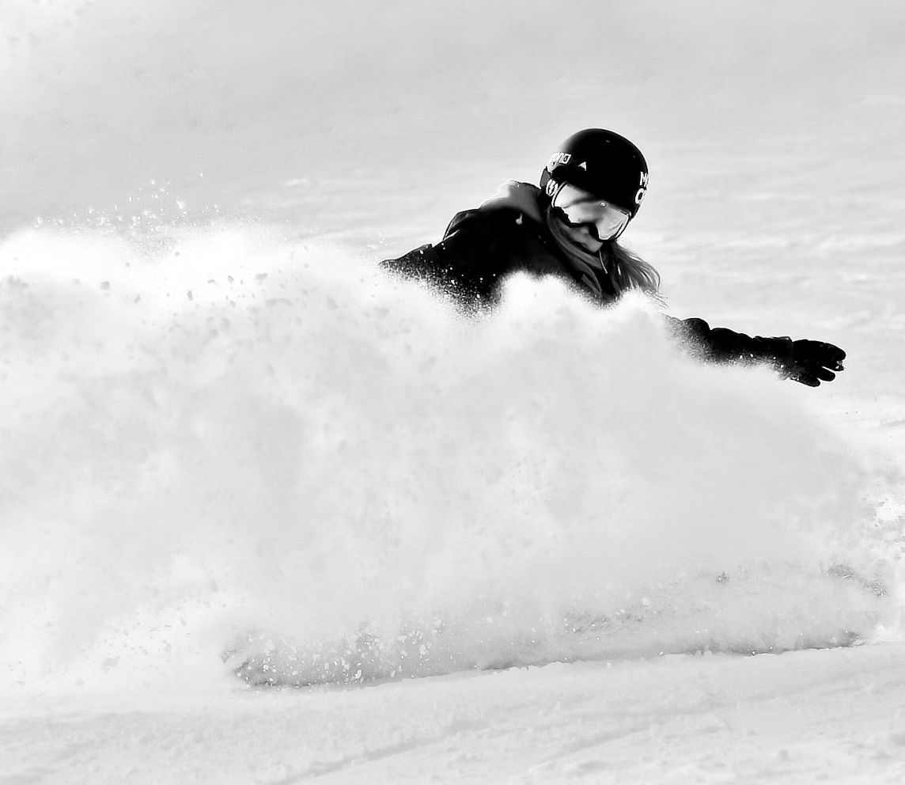

Client Stories
Jenna
"I was a bit skeptical at first when booking my ski trip through Lucas Snow.
As someone with very little experien ce on the slopes, I wasn’t sure how it would go.
But I have to say, I’m SO glad I gave it a shot! The whole process was super easy, and the
team was incredibly helpful in answering all my questions. When I got there, I was matched
with an amazing instructor who had years of experience and really knew how to break things down
for beginners like me. I felt comfortable right away. By the end of the first day, I couldn’t
believe how much progress I had made—I was skiing with confidence and having the time of my life!
Lucas Snow really exceeded my expectations, and I can’t wait to book my next trip. Highly recommend!"

Sean
"My friends convinced me that snowboarding was going to be ‘easy’ and ‘super fun,’ so naturally,
I trusted them and booked a trip with Lucas Snow. I mean, how hard could it be, right? Spoiler alert:
I spent more time falling than actually snowboarding on the first day! Luckily, Lucas Snow's instructors
saved the day. Our instructor had the patience of a saint and the sense of humor to match, which made it all
way more enjoyable. After a few (okay, MANY) tumbles, we finally started getting the hang of it. By day two,
we were carving down the slopes like we knew what we were doing… sort of. It was an absolute blast, and I can’t
thank Lucas Snow enough for making it such a memorable trip. If you’re thinking about giving snowboarding a try,
do yourself a favor and book with these guys. Just don’t forget the padding for your backside!"

Nathan
"As an experienced snowboarder, I wasn’t sure if I’d get much out of taking lessons,
but I wanted to perfect my form and push my limits a bit more. I decided to book with Lucas Snow,
and honestly, I’m so glad I did! The instructors here aren’t just for beginners—they really know
their stuff. They pointed out small adjustments I could make, things I hadn’t even considered,
and it completely changed how I ride. My turns are smoother, I have way more control, and
my confidence on more advanced runs is at an all-time high. If you’re serious about improving
your skills, Lucas Snow is the way to go. Whether you're just starting out or have years of
experience like me, they’ll help you reach that next level. I’m definitely coming back—and I’d
recommend their lessons to anyone, no matter how long you’ve been on the slopes!"
